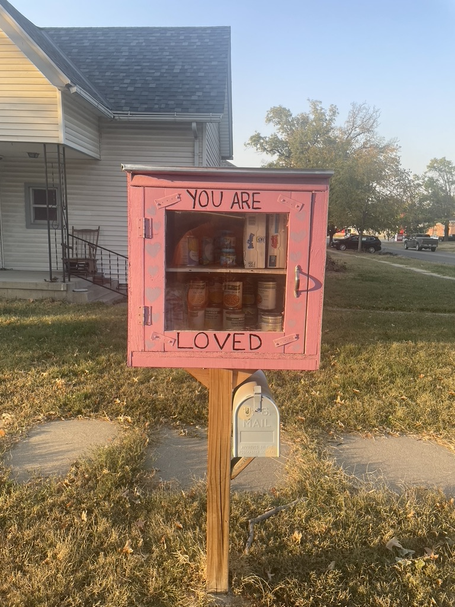
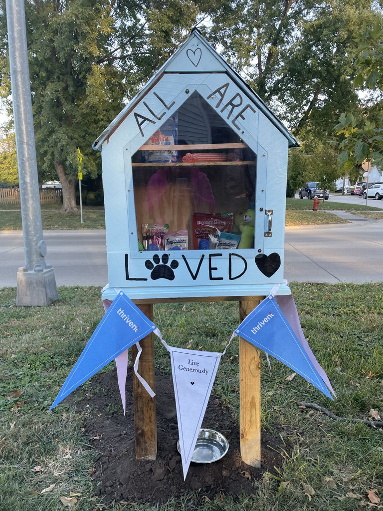
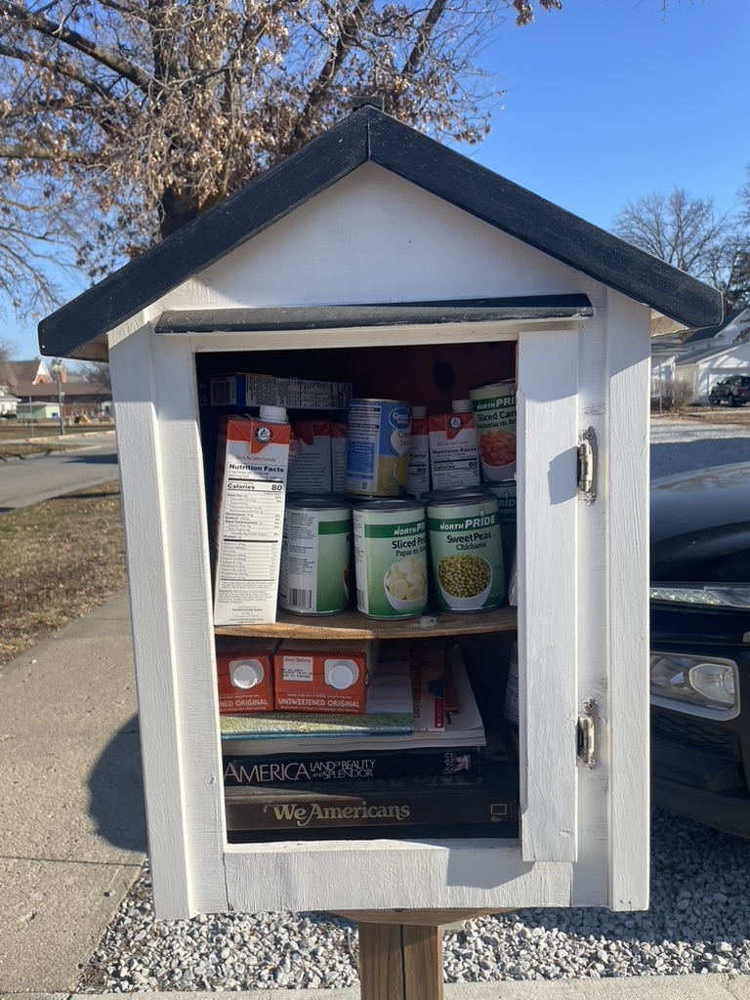
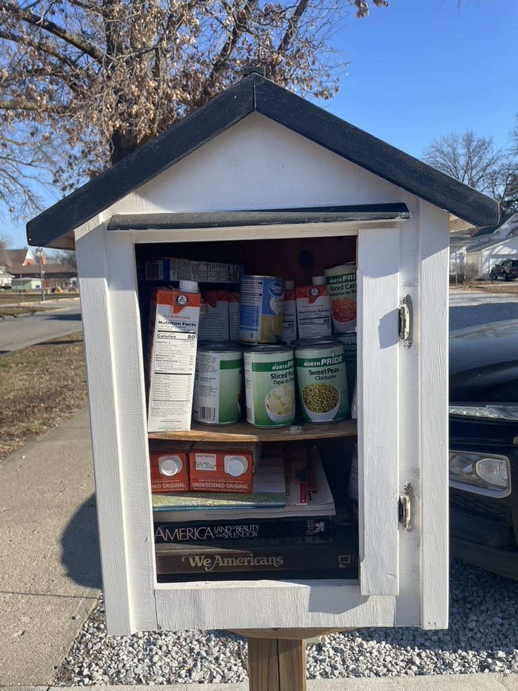
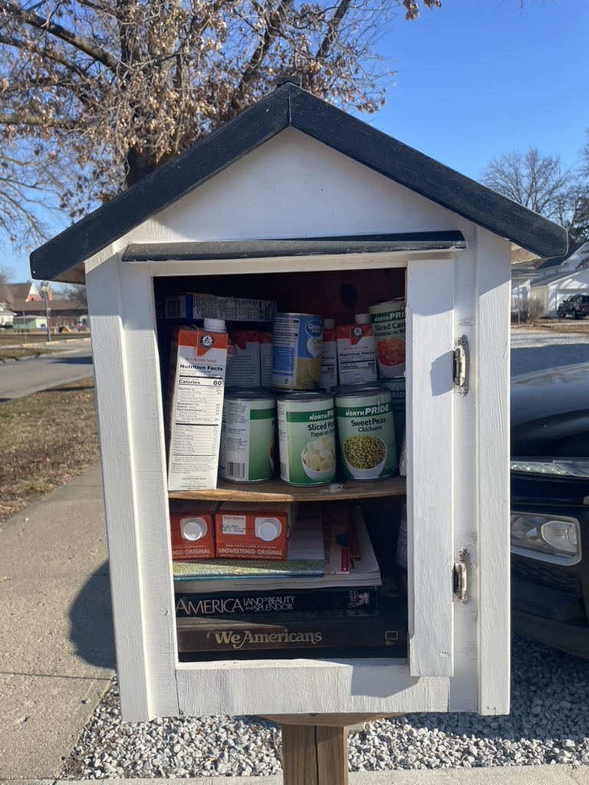
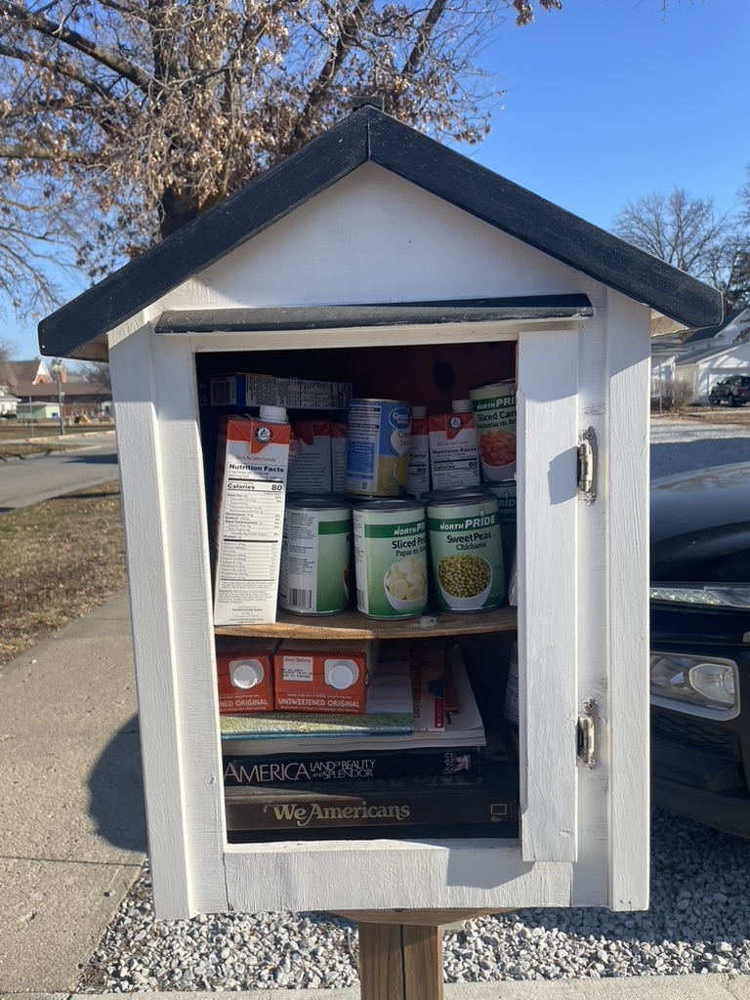

Take what you need, give what you can.
Supporting Crete with free pantries for people and pets since 2021.


 


Supporting Crete with free pantries for people and pets since 2021.

Crete’s Little Free Pantries began in 2021 as a community project dedicated to offering food, hygiene items, and pet supplies to anyone in need. The Buddy Box, our pet pantry, honors a beloved dog and has become one of our most popular boxes.
Learn more about our story in the news:
All of our pantries and the Buddy Box are open 24/7 throughout Crete. You can find them near the following intersections.
12.3% of Crete residents live below the poverty line.
$47,022 median household income in Crete.
42% of residents identify as Hispanic/Latino.
7.7% of Nebraskans receive SNAP/EBT benefits.
Email: sonia.almodovar@doane.edu
Phone: (308) 850-1476
Follow us: Facebook Page | Buddy Box